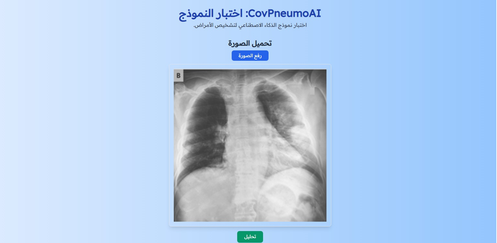
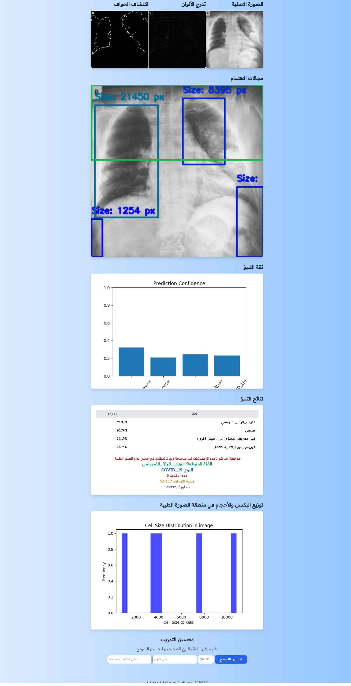

CovPneumoAI: اختبار النموذج
اتبع الخطوات التالية لاختبار نموذج الذكاء الاصطناعي لتشخيص الأمراض الرئة .
1
تشغيل البرنامج النصي للاختبار
انقر نقر مزدوج run.bat لبدء عملية الاختبار. اختر الخيار 2 من القائمة.
2
انتظر حتى يتم فتح المتصفح
سيقوم البرنامج بفتح متصفح الويب الافتراضي تلقائيًا خلال 10 ثوانٍ.
3
تحميل صورة
انقر على رفع زر لاختيار صورة من جهاز الكمبيوتر للتحليل.

4
عرض النتائج
بعد بضع ثوانٍ من التحليل، ستظهر النتائج على الشاشة، موضحة تشخيص الذكاء الاصطناعي.
